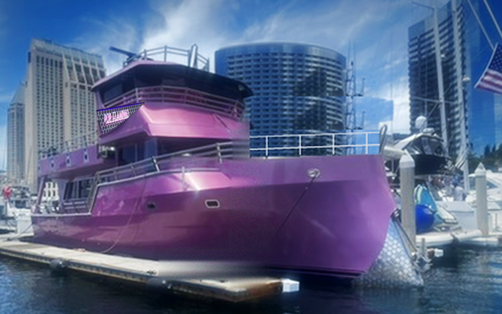

Scotty's crazy build
A tired white cruiser, taken down to the bones and rebuilt as a floating work of art. Same hands as the paintings, much bigger canvas.

Before and after
Same boat. Different attitude.

The build
From the dock to the spotlight.
How a tired white cruiser became Pop Flamingo. Tap any photo to see it bigger.
Chapter 1
Where she started
A plain white cruiser, still wearing her old name.
White, at the dock. The blank canvas.
Still called ODESSA.
Hauled out on the travel lift.
Chapter 2
Down to the bones
Ceilings down, wiring out, everything opened up.
The helm, ceiling down.
Cabin stripped to the beams.
Demolition below deck.
Chapter 3
Built in the shop
Back at Scotty's shop (cave), the new pieces get made by hand.
Scotty's shop.
Railing panels taking shape.
Flamingos cut in wood.
A spiral staircase, built from scratch.
A panel painted by hand.
Fresh pink paint in the shop.
Chapter 4
Back on board
The new pieces go on, one by one.
The spiral stairs go aboard.
New railings going on.
New rails on, still white.
The turbine tower.
A flamingo set into the deck.
The new name, lit up at night.
Chapter 5
Lights on
After dark, Pop comes alive.
Lit from bow to tower.
The stairs and tower, glowing.
Doors closed, lights on.
The turbine tower, lit up.
Chapter 6
Inside
Finished, carpeted and lit.
The helm after dark.
The bar, lit up under the truss.
The brick bar, glowing blue.
Brick bar and leopard stairs.
The lounge, with Scotty's mural.
The pink cabin.
A Scotty mural on the door.
Art in the hallway.
The reveal
Pop Flamingo.
Pink from bow to stern, and impossible to miss in any marina.
All pink, with the Tribangle on deck and the turbine tower up top.
Pink at the dock, at dusk.